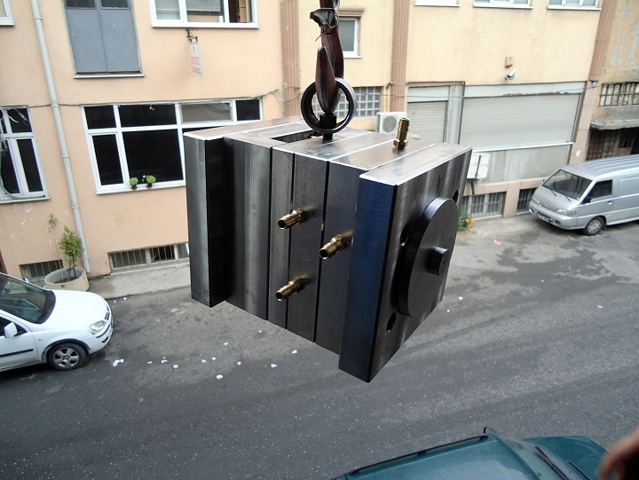

4.5.2 Erkek Plaka Ýmalat Aþamalarý
EK 6’da ölçüleri verilen plaka cnc tezgahta ilk önce kalýp boþluðu açýldý.
Resim 23 Erkek Plaka Ýmalat Aþamasý 1
Daha sonra kolon pimleri delinerek rayba çekildi
Resim 24 Erkek Plaka Ýmalat Aþamasý 2
Baðlantý delikleri delindi, itici delikleri delinerek rayba çekildi.
Resim 25 Erkek Plaka Ýmalat Aþamasý 3
Erkek plakada çýkýntý parçalar sonradan iþlenerek erkek plakaya eklenmiþtir.
Resim 26 Erkek Plaka Üretimden Sonra
4.5.3. Destek Plakanýn Ýmalat Aþamalarý
EK 7’de te ölçüleri verilen destek plakasýnýn üzerinde yapýcalak fazla iþlem yoktur sadece delik delme iþlemi vardýr.Bu delikler itici delikleri ve baðlantý delikleridir. Bu deliklerin ekseninde delinmesi gerekmektedir.
Resim 27 Destek Plaka Ýmalat Aþamasý
Resim 28 Destek Plakasý Üretimden Sonra ve Montaj Hali
4.5.4. Baðlantý Plakalarýnýn Ýmalat Aþamalarý
Baðlantý plakalarýnda (EK 8) baðlantý cývatalarý için delikler bulunmaktadýr. Ayrýca alt baðlantý plakasýnda enjeksiyon makinesinin itici plakaya hareket verebilmesi için büyük bir delik bulunur.Üst baðlantý plakasýnda ise enjeksiyondan gelen ergimiþ plastiðin yolluklara ulaþmasý için delik bulunur
Resim 29 Baðlantý Plaka Ýmalat Aþamasý
Resim 30 Baðlantý Üst Plakasý Üretimden Sonra
Resim 31 Baðlantý Alt Plakasý Üretimden Sonra
4.5.5. Ýtme Üst Plakasý ve Alt Plakasý
Ýtme alt plakasýnda (EK 9) sadece itme üst plakasýna baðlamak için baðlantý delikleri vardýr. Üst itme plakasýnda ise itici yuvalarýnýn delikleri bulunur bunlarda ekseninde açýlmak zorundadýr (EK 10). Aksi halde iticilerin iler geri hareketlerinde sürtünme olur ve zmanlar iticiler aþýnarak ürün çapaklý çýkmaya baþlar
Resim 32 Ýtme Alt Plaka Ýmalat Aþamasý
Resim 33 Üst Ýtme Plakasý Ýmalat Aþamasý
Resim 34 Ýtme Plakalarýnýn Üretimden Sonra Montajý
4.5.6. Ýtme Ayaklarýný Ýmalat Aþamalarý
Ýtme ayaklarý (EK 11) sadece destek görevi gördüðünden ve itici mesafesi ayarladýðýndan üzerinde sadece baðlantý deliði bulunur. Baðlantý plakasý ve destek plakasý arasýnda bulunur. Baðlantý plakasý ile erkek plakasý arasýnda cývata baðlantýsý yapýlýr. Fakat cývata itmek ayaklarý ve destek plakasýndan geçer. Ýtme ayaklarýnýn baðlantý þekli Resim 36 de görünmektedir.
Resim 35 Ýtme Ayaðý Ýmalat Aþamasý
Resim 36 Ýtme Ayaklarý Baðlantý Þekli
Resim 37 Ýtme Ayaklarý Üretimden Sonra
4.6 Kalýp Montajý
Kalýp montajý yapýlýrken iç parçalarýn montajýndan baþlanmalýdýr. Resim 38 de görüldüðü gbi önce diþi plaka üzerindeki konik kitleme gibi ufak parçalarýn montajý yapýlmalýdýr. Burçlarda diþi plakaya yerleþtirilir.
Resim 38 Konik Kitleme Montajý
Daha sonra diþi plaka baðlantý plakasýna baðlanýr. Yolluk burcu yerine yerleþtirilir ve flanþ takýlýr. Kalýbýn diþi kýsmýn montajý tamamlanmýþ olur.
Resim 39 Diþi Kýsým Montajý
Daha sonra erkek plaka üzerine iç lokmalar takýlarak arkadan cývata baðlantýlarý yapýlýr. Konik kitleme montaj edilir ve kolon pimleri yerlerine takýlýr.
Resim 40 Erkek Plaka Montajý
Daha sonra itici pimler, destek plaka ve erkek plakadaki itici pim deliklerinden geçecek þekilde itme üst plakasýndaki yuvalarýna takýlýr. Ýtme alt plakasýda üst plakaya cývatayla baðlanarak itici pimler sabitlenmiþ olur.
Resim 41 Ýtici Pim ve Plakalarýn Montajý
Ýtme ayaklarý, itme plakalarýnýn yanlarýna gelecek þekilde yerleþtirilir ve arkasýna baðlantý plakasý konur. Cývatalar, itme ayaklarý ve destek plakadan geçirilerek erkek plakaya baðlanýr.
Resim 42 Ýtme Ayaklarýnýn Montajý
Diþi ve erkek kýsmý Resim 43 deki gibi bir araya getirildiði zaman cývatalar sýkýþtýrýlarak diþi kýsým erkek kýsým üzerine konur.Resim 44. Böylece Kalýp Montajý Yapýlmýþ olur.

Resim 43 Diþi ve Erkek Kýsým Montajý
Resim 44 Kalýp Montaj Yapýlmýþ Hali
Kalýp montajý yapýlýrken birbiri ile temas eden yüzeylerin alýþtýrmalarý yapýlmaktadýr. Kalýp çalýþtýðý zman ise parçalar birbrine uyum saðlarlar. Daha sonra tekrar kalýp söküldüðünde esk halinde toplanabilmesi için ayný uyumda ve yönde tekrar baðlanabilmesi için kalýp markalanmalýdýr. Resim 45’de markalama görülmektedir.
Resim 45 Kalýp Markalama
Montajý yapýldýðýnda kalýp bir grup halinde çok yüksek aðýrýklara çýkmaktadýr. Bu durum ise kalýbýn bir yerden baþka bir yere nakledilmesinde veya kalýbýn enjeksiyon makinesine baðlanmasýnda vinç kullanmayý gerektirmektedir. Vinç kancasý takabailmek için kalýplarda mapa kullanýlýr ve genellikle kalýp destep plakasýna mapa deliði delinir.

Resim 46 Kalýpta Mapa Kullanýlmasý
KAYNAKLAR
Kitaplar
AKKURT, S.; “Plastik Malzeme Teknolojisi”, Ý.T.Ü. Makine Fakültesi Ofset Atölyesi, Ýstanbul. (1995)
AKKURT, S., KILIÇ A.R.; “Plastik Enjeksiyon Kalýplarýnýn Ýncelenmesi” Makine-Metal Teknolojisi Dergisi (Aralýk 1999)
AKYÜZ Ö.F.; “Plastikler ve Plastik Enjeksiyon Teknolojisine Giriþ” , PAGEV
Yayýnlarý, Ýstanbul (1993)
Tezler
AALKAYA, A.R.; “Plastik Enjeksiyon Kalýplarýnýn Tasarýmý ve Üretimi”, Yüksek Lisans Tezi, ÝTÜ Fen Bilimleri Enstitüsü, Ýstanbul. (1998)
ANAPA, H.; “Plastiklerin Gaz Enjeksiyon Metodu ile Üretiminde Ýþlem
Parametrelerinin Tasarým ve Ýmalata Etkisinin Ýncelenmesi”, Yüksek Lisans Tezi, ÝTÜ Fen Bilimleri Enstitüsü, Ýstanbul (2003)
BUCAKLIGÝL, C.; “Plastik Kalýp Tasarým Esaslarý ve Uygulamalý Kalýp Tasarým
Örneði”, Yüksek Lisans Tezi, ÝTÜ Fen Bilimleri Enstitüsü, Ýstanbul (2003)
ESENLÝK, M.; “Plastik Enjeksiyon Kalýpçýlýðýnda Karþýlaþýlan Sorunlar ve Çözüm
Önerileri”, Yüksek Lisans Tezi, MÜ Fen Bilimleri Enstitüsü, Ýstanbul (2001)
KAMBER, Ö.Þ.; “Plastik Enjeksiyon Kalýplarýnýn Bilgisayarla Tasarýmý ile Pratikteki
Farklýlýklarýnýn Karþýlaþtýrýlmasý ve Çözüm Önerileri, Yüksek Lisans Tezi, MÜ Fen
Bilimleri Enstitüsü, Ýstanbul. (2003)
KARADAÐ, H.; Plastik Kalýpçýlýðýn Esaslarý, Yüksek Lisans Tezi, MÜ Fen Bilimleri Enstitüsü, Ýstanbul. (1994)
ÖZ, U.; “Bilgisayar Destekli Plastik Enjeksiyon Kalýp Tasarýmý”, Yüksek Lisans
Tezi, YTÜ Fen Bilimleri Enstitüsü, Ýstanbul.(1997).
ÞEKER, C.; “Termoplastiklerin Þekillendirilmesinde Kullanýlan Enjeksiyon
Kalýplarýnýn Ýncelenmesi”, Yüksek Lisans Tezi, MÜ Fen Bilimleri Enstitüsü, Ýstanbul (1999)
|